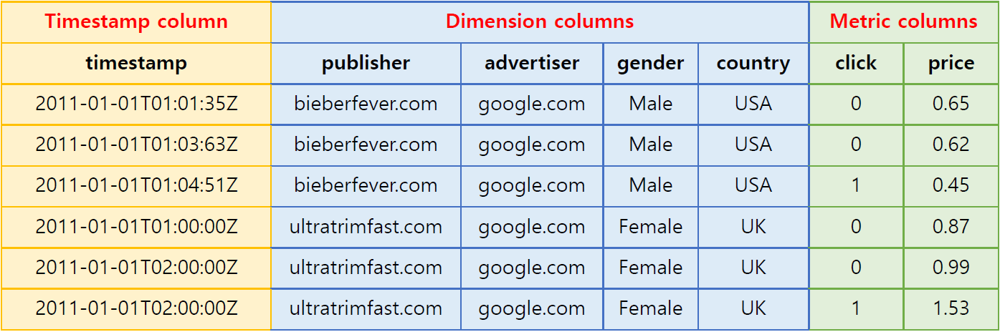

Druid features¶
Data table components¶
Data tables in Druid (called data sources) are collections of timestamped events designed for OLAP queries. A data source is composed of three distinct types of columns (here we use an example dataset from online advertising).
Source: http://druid.io¶
Timestamp column: Druid treats timestamp separately in a data source because all its queries center around the time axis (If non-time series data is ingested in batch, all records are timestamped with the current time for use in Druid).
Dimension columns: Dimensions are string attributes of an event, and the columns most commonly used in filtering the data. Four dimensions are involved in the example dataset: publisher, advertiser, gender, and country. They each represent an axis of the data chosen to slice across.
Metric columns: Metrics are columns used in aggregations and computations. In the example, the metrics are clicks and price. Metrics are usually numeric values, and computations include operations such as count, sum, and mean (Metatron has extended supported Druid data types).
Data ingestion¶
Druid supports real-time and batch ingestion.
One major characteristic of Druid is real-time ingestion, which is enabled by real-time nodes (For details, see Real-time nodes). Events ingested in real-time from a data stream get indexed in seconds to become queryable in the Druid cluster.
Data roll-up¶
The individual events in our example dataset are not very interesting because there may be trillions of such events. However, summarizations of this type of data by time interval can yield many useful insights. Druid summarizes this raw data when ingesting it using an optional process called “roll-up.” Below is an example of roll-up.

Source: Interactive Exploratory Analytics with Druid | DataEngConf SF ‘17¶
The table on the left lists the domain click events that occurred from 00:00:00 to 01:00:00 on January 1, 2011. Since individual events recorded in seconds do not have much significance from the analyst’s perspective, the data was compiled at a granularity of one hour. This results in the more meaningful table on the right, which shows the number of clicks by gender for the same time period.
In practice, rolling up data can dramatically reduce the size of data that needs to be stored (up to a factor of 100), thereby saving on storage resources and enabling faster queries.
But, as data is rolled up, individual events can no longer be queried; the rollup granularity is the minimum granularity you will be able to explore data at and events are floored to this granularity. The unit of granularity can be set as desired by users. If necessary, the roll-up process may be disabled to ingest every individual event.
Data sharding¶
A data source is a collection of timestamped events and partitioned into a set of shards. A shard is called a segment in Druid and each segment is typically 5–10 million rows. Druid partitions its data sources into well-defined time intervals, typically an hour or a day, and may further partition on values from other columns to achieve the desired segment size.
The example below shows a data table segmented by hour:
Segment sampleData_2011-01-01T01:00:00:00Z_2011-01-01T02:00:00:00Z_v1_0:
2011-01-01T01:00:00Z ultratrimfast.com google.com Male USA 1800 25 15.70
2011-01-01T01:00:00Z bieberfever.com google.com Male USA 2912 42 29.18
Segment sampleData_2011-01-01T02:00:00:00Z_2011-01-01T03:00:00:00Z_v1_0:
2011-01-01T02:00:00Z ultratrimfast.com google.com Male UK 1953 17 17.31
2011-01-01T02:00:00Z bieberfever.com google.com Male UK 3194 170 34.01
This segmentation by time can be achieved because every single event in a data source is timestamped.
Segments represent the fundamental storage unit in Druid and replication and distribution are done at a segment level. They are designed to be immutable, which means that once a segment is created, it cannot be edited. This ensures no contention between reads and writes. Druid segments are just designed to be read very fast.
In addition, this data segmentation is key to parallel processing in Druid’s distributed environment: As one CPU can scan one segment at a time, data partitioned into multiple segments can be scanned by multiple CPUs simultaneously in parallel, thereby ensuring fast query returns and stable load balancing.
Data storage format and indexing¶
The way Druid stores data contributes to its data structures highly optimized for analytic queries. This section uses the Druid table below as an example:

Source: Druid: A Real-time Analytical Data Store¶
Columnar storage and indexing¶
Druid is a column store, which means each individual column is stored separately. Given that Druid is best used for aggregating event streams, column storage allows for more efficient CPU usage as only the columns pertaining to a query are actually loaded and scanned in that query. In a row oriented data store, all columns associated with a row must be scanned as part of an aggregation. The additional scan time can introduce significant performance degradations. In the example above, the page, user, gender, and city columns only contain strings. Storing strings directly is unnecessarily costly; instead, they can be mapped into unique integer identifiers. For example,
Justin Bieber -> 0
Ke$ha -> 1
This mapping allows the page column to be represented as an integer array where the array indices correspond to the rows of the original dataset. For the page column, we can represent the unique pages as follows:
[0, 0, 1, 1]
Thus, strings are replaced by fixed-length integers in storage, which are much easier to compress. Druid indexes data on a per-shard (segment) level.
Indices for filtering data¶
Druid creates additional lookup indices that facilitate filtering on string columns. Let us consider the above example table again. A query might be: “How many Wikipedia edits were done by users in San Francisco who are also male?” This example query involves two dimensions: City (San Francisco) and Gender (Male). For each dimension, a binary array is created where the array indices represent whether or not their corresponding rows match the query filter, as shown below:
San Francisco (City) -> rows [1] -> [1][0][0][0]
Male (Gender) -> rows [1, 2, 3, 4] -> [1][1][1][1]
And the query filter performs the AND operation between the two arrays:
[1][0][0][0] AND [1][1][1][1] = [1][0][0][0]
As a result, only row 1 is subject to scanning, which retrieves only the filtered rows and eliminates unnecessary workload. And these binary arrays are very easy to compress as well.
This lookup can be used for the OR operation too. If a query filters on San Francisco or Calgary, array indices will be for each dimension value:
San Francisco (City) -> rows [1] -> [1][0][0][0]
Calgary (City) -> rows [3] -> [0][0][1][0]
And then the OR operation is performed on the two arrays:
[1][0][0][0] OR [0][0][1][0] = [1][0][1][0]
Thus the query scans rows 1 and 3 only.
This approach of performing Boolean operations on large bitmap sets is commonly used in search engines.
Query languages¶
Druid’s native query language is JSON over HTTP. Druid queries include:
Group By
Time-series roll-ups
Arbitrary Boolean filters
Sum, Min, Max, Avg and other aggregation functions
Dimensional Search
In addition to these, query libraries in numerous languages, including SQL, are developed and shared.